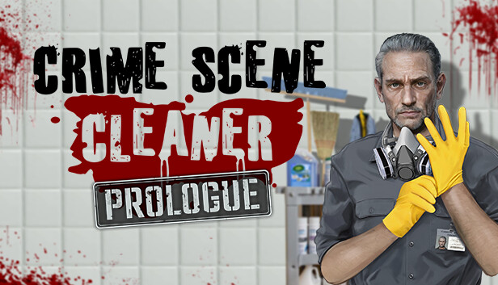
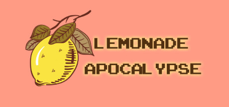

Imagine-se explorando novos mundos sem gastar um centavo! A Steam recebeu, durante a semana passada, seis jogos grátis fresquinhos para você mergulhar de cabeça. Desde simulações de negócios até aventuras sombrias e até mesmo uma aula de álgebra, há algo para todos os gostos. Um dos jogos mais polêmicos da Bethesda ficará gratuito no PC! Veja como resgatar Ao todo, mais de 200 games chegaram na plataforma da Valve durante a semana passada. Entre os lançamentos, dezenas de jogos grátis também foram disponibilizados, mas nem todos são bons.
Crime Scene Cleaner: Prologue
Em Crime Scene Cleaner: Prologue, assumimos o papel de um especialista em limpeza após crimes, envolvendo-se nas tarefas sujas da máfia em troca de dinheiro. Com a vida de sua filha em jogo, sua habilidade se torna crucial. O prólogo gratuito oferece uma visão da vida do protagonista, destacando suas lutas enquanto ele tenta se manter fora do radar da polícia, descartando corpos e destruindo evidências. Explore histórias por trás dos delitos, aprimore seu equipamento e mantenha-se fora de suspeita enquanto mergulha nesse mundo perigoso e sombrio.
Lemonade Apocalypse
Home Em Lemonade Apocalypse, o objetivo é liderar o mundo em direção ao apocalipse através da venda de limonadas. Ele enfatiza a importância do preço na demanda: preços mais altos significam mais lucro, mas vendas menos frequentes. É essencial equilibrar o valor para maximizar os ganhos e manter as vendas estáveis. Além disso, é necessário gerenciar os custos dos ingredientes para garantir lucratividade e investir em melhorias que reduzam os custos e aumentem a demanda.
.jpg)
Void Whispers
Void Whispers mergulha os usuários na atmosfera inquietante da década de 1940, transportando-os para a pele de Mike, um engenheiro de transmissão recém-chegado à cidade de Cosmo. Enquanto ele se esforça para dominar os equipamentos de rádio e manter os cidadãos informados, eventos inexplicáveis começam a ocorrer nos céus, desencadeando uma jornada de descoberta e terror.
.jpg)
Dave's Fun Algebra Class: Remastered
Dave's Fun Algebra Class: Remastered é um jogo indie baseado em estratégia que mistura caos e intensidade, inspirado em Baldi's Basics, com um estilo de arte psicodélica de antigamente. O jogo apresenta Dave, um professor de matemática em uma cadeira de rodas motorizada, que está sempre pronto para testar as habilidades das pessoas em cálculos.
.jpg)
Glitch Maze.exe
Glitch Maze.exe é uma experiência casual que se inspira em títulos como Pac-Man, enquanto adiciona elementos sutis de horror. Este desafio abraça o conceito de usar seus fracassos passados para progredir: cada vez que você morre, deixa para trás um pequeno farol de luz que revela partes do labirinto e os perigos que espreitam nele.
.jpg)
Atan
Atan é uma experiência imersiva de ação e aventura em que enfrentamos o desafio de escalar um colosso gigantesco. Utilizando as habilidades de escalada e usando um arco e âncoras, embarcamos em uma jornada sobre o corpo desta criatura colossal. No entanto, este não é uma simples tarefa física; o terreno acidentado e as múltiplas ameaças ao redor mostram que o gigante está vivo e necessita de sua ajuda.